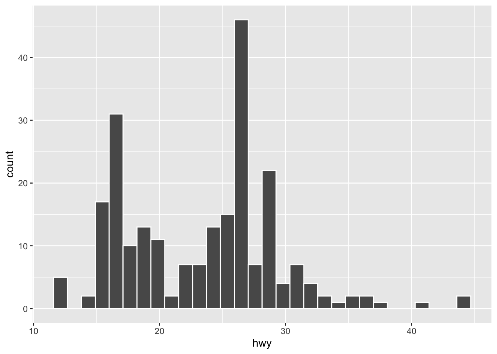

Chapter 1 Data Science and R
1.1 What is Data Science?
Data Science is an interdisciplinary subject, which integrates knowledge of statistics, computer science and other domina-specific areas. A graph by Drew Conway may summarize the essense of Data Science:

1.2 Working Pipeline for Data Science
Hadley Wickham’s R for Data Science describes six important steps for data analysis:

1.3 Why R?
According to a report by KDnuggets, among all the languages used by data scientists, python and R are the most popular two languages:

It is true that Python now seems much more popular among IT developers. That being said, you may consult this article, << Why R is the Best Data Science Language to Learn Today? >>, for a more comprehensive review of the strengths of R. The general tendency is that: if you want to go into the industry and take developers or programmers as your future career, you can choose Python; if you are planning to settle yourself in the academia, I would definitely recommend R.
Here are a list of strengths for R language:
- powerful statistical analysis
- data visualization
- exploratory analysis
- re-usable reports
tidyverse
- consistent grammar/syntax
- high readability of the codes, similar to human languages (
%>%is a unique R feature!)
In this course, our main objective is to introduce you to the world of coding. A high-level programming language like R would be a very friendly start, especially for those who have no background of computing. So, let us enjoy the journey of a simple yet powerful language learning!
In fact, now it seems that data scientists are expected to be multilingual and well-versed in the proper coding language to deal with the target tasks efficiently.
Also, R and RStudio have developed toward this aim by expanding its capacity of integrating the Python language. Now RStudio can be a Single Home for R & Python. Similarly, Jupyter Lab/Notebook (a Python IDE) can run R codes seamlessly as well.
1.4 tidyverse
In this course, we will be working on a collection of packages included in tidyverse. This is a unique package in R, which can help you deal with data in a massively convenient way. It is hoped that the user can easily call particular functions and make use of the pipe operator %>% to concatenate all procedures serially, just like the natural human languages.
In particular, we will work on the following major libraries from tidyverse:


ggplot2: Data visualizationdplyr: Data wranglingtidyr: Data wranglingstringr: String manipulationreadr: Data importingpurrr: Functional programming to avoid loopstibble: Powerful data structure
Here is a quick example to show the efficiency of the tidyverse-style R.
We first prepare a simple collection of texts, which include 720 sentences.
library(tidyverse)
head(sentences) ## `sentences` dataset is included in `stringr`[1] "The birch canoe slid on the smooth planks."
[2] "Glue the sheet to the dark blue background."
[3] "It's easy to tell the depth of a well."
[4] "These days a chicken leg is a rare dish."
[5] "Rice is often served in round bowls."
[6] "The juice of lemons makes fine punch." ## Prepare a data frame for analysis
corp <- data.frame(id = seq(1:length(sentences)),
texts = str_to_lower(sentences))
corpWith a few R commands concatenated by the pipe %>%, we can see the distributions of the vowel and consonant percentages of all the sentences in the text collection.
corp %>%
mutate(NumOfChars = nchar(texts),
VowelPer = str_count(texts,'[aeiou]')/NumOfChars,
ConPer = str_count(texts,'[^aeiou]')/NumOfChars) %>%
pivot_longer(c("VowelPer", "ConPer"), names_to = "Segment",values_to = "Percent") %>%
ggplot(aes(Segment, Percent, fill=Segment)) + geom_boxplot(notch=TRUE)
1.5 More Skills
Data scientists are now becoming more and more popular. To know more about this job, one thing you may want to know is what kinds of skills are needed? The following two graphs were taken from <The Most in Demand Skills for Data Scientists>:

While people still have various definitions regarding what data science encompasses, there are indeed several practical fields that have been commonly regarded as part of the definitions of Data Science. According to Mason and Wiggins (2010) A Taxonomy of Data Science, data science can be defined according to five crucial steps:
- Obtain: pointing and clicking does not scale. (Data collection via copy-pasting is limited.)
- Scrub: the world is a messy place. (Clean data are hard to come by.)
- Explore: You can see a lot by looking. (A picture is worth a thousand words.)
- Models: always bad, sometimes ugly. (Chance-level observations are everywhere.)
- iNterpret: “The purpose of computing is insight, not numbers.”
This OSEMN (awesome!!) model should give you a much clearer picture of what you need to become a proficient data scientist.
What we do here in this course is just a start….Take a deep breath:)